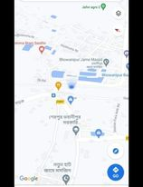

Alimal Doctors offers complete healthcare servicefor your animal companions.
call or stop in and see our commitment to providing
compassionate care for your family friends.
Animale-Doctor is conveniently located at, Bhowanipur-Bazar beside the rail line

For additional information or help with directions, feel free to call us at:01762788470
Find us here on Google Maps
Clinic Hours:
Our reguler joffice hours are shown below.
We will post any speacial busness hourssuch as holiday hours on our Facebook page
Monday through Friday :7am-10pm
Saturday:7am-11pm
Close:---
Healthy Pets.Healthy People
Cat friendly Homes
Selecting a pet for Your Family